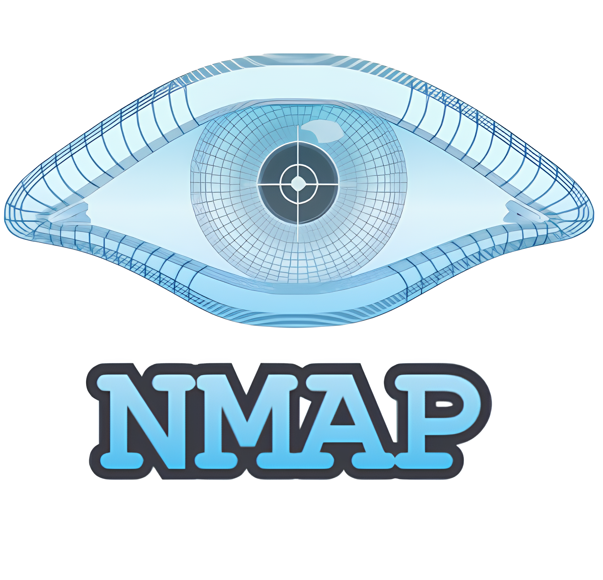
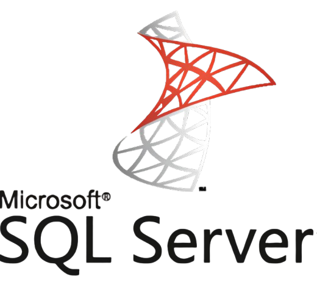
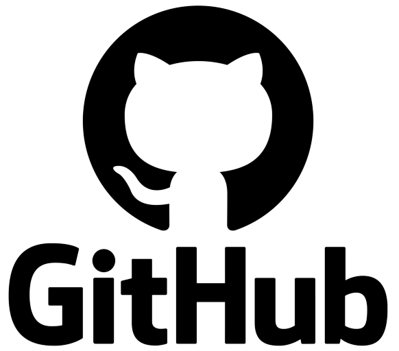
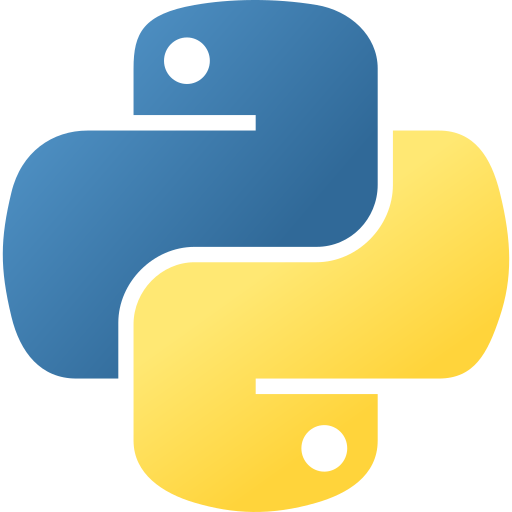
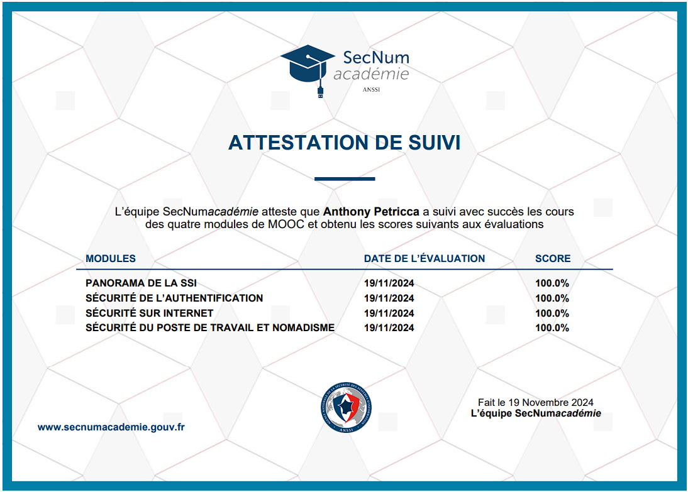
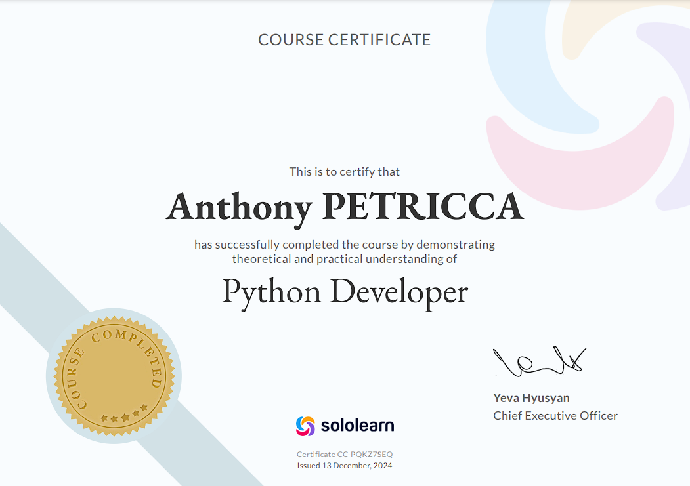

Compétences
Cette section retrace tous les Hardskills que j'ai développés jusqu'à aujourd'hui notemment grâce à l'alternance.
-Outils, logiciels & languages de programation qui m'on était très utiles autant en entreprise qu'en formation :






📜 -Diplômes et Certifications-
Mes différents diplômes et certifications obtenus en autodidacte au cours de mes années en BTS.


×

Veille
Contenu de la section veille...
Projet Professionnel
Contenu de la section Projet Pro...
Contactez-moi
📧 Email : anthony.petricca@sfr.fr
📞 Téléphone : +33 6 29 66 06 69
📍 Localisation : La Verpillière, 38290